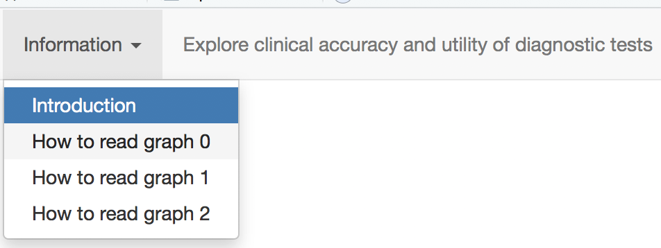

Welcome to the NIHR DEC Newcastle's tool for assessing the clinical accuracy and clinical utility of a diagnostic test
This Shiny app allows you to explore and discover the factors that affect:- Clinical accuracy: How test accuracy measures that are important to patients and clinicians depend on:
- Pre-test probability (i.e. the prevalence of the condition)
- Sensitivity of the test (i.e. the true poitive rate)
- Specificity of the test (i.e. the true negative rate)
- Clinical utility: How results from a diagnostic test help with clinical decision-making.
- Result = rule in warrants treat the condition
- Result = rule out warrants do not treat the condition
- Result = inconclusive may warrant further investigation
This is the second of three Shiny apps for exploring the factors that determine a diagnostic test's accuracy:
- Test accuracy - the
technical measures of test accuracy: sensitivity, specificity, true and
false postives, true and false negatives
- Clinical accuracy and clinical utility
- the patient-important measures of test accuracy: positive
and negative predictive
values and post-test probabilities; the role of probability thresholds
for rule-in and rule-out decisions
- Uncertainties
in assessing test accuracy when the reference standard is not perfect.
How to use this app
Use the tabs at
the top (i) to review information about using the app and
reading the graphs, (ii) to view the graphs, and (iii) download a summary report for your use.
 Figure. The tabs at the top of the app's window |
- "About"
--- this tab, about using the input panel on the left to generate and
modify the graphs, and the tabs at the top to select information and
graphs.
- "About
graph 1" --- how to read graph shown
in tab 2, clinical accuracy
- "About
graph 2" --- how to read the graph shown
in tab 2, clinical utility
- "About
graph 1" --- how to read graph shown
in tab 2, clinical accuracy
- "Clinical accuracy and utility"
- "Graph 1: clinical accuracy" ---- a graph showing the accuracy measure that are important to patients and clinicians: pre- and post-test probabilities, and how these relate to the pre-test probability or prevalence.
- "Graph 2:
clinical utility"
--- a
graph showing how clinical decisions depend on post-test probabilities,
which in turn depend on prevalence, sensitivity (for
rule-out decisions), and specificity (for rule-in decisions).
- "Tables" --- Tabulations of the key data shown in the graphs. - NEED TO UPDATE THIS
- "Download summary report" --- Choose a location on your computer to download a copy of your input data and graphs
Inputing your data and generating graphs
In the clinical accuracy and utility, graphical tabs: Use the left-hand panel to (re)draw the graphs and enter the variables
- A button at the top to "Update the graphs", which are shown under the tabs "Decision thresholds" and "Pre- to post-test probablity".
- The "Input variables" which are used to:
- label the graphs
- set the variables which determine:
- the post test probability: disease prevalence and test accuracy (sensitivity and specificity)
- the decision-making: thresholds for rule-in results and rule-out results
- the precision of post-test probability estimations: the population size in the study which provides the sensitivity and specificity estimations